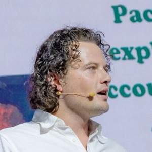

AI-ready data
platform architecture
Design modern data platforms using Snowflake, cloud-native infrastructure, and scalable ingestion frameworks.
Qualia Partners designs and builds AI-ready data platforms that transform raw data into trusted intelligence.
We help organisations design and build governed, scalable data platforms that enable advanced analytics, machine learning, and AI.
Our work focuses on establishing clean architecture, reliable pipelines, and durable data models that support long-term intelligence.
Design modern data platforms using Snowflake, cloud-native infrastructure, and scalable ingestion frameworks.
Create governed, structured and reusable data models that enable reliable analytics and AI.
Transform fragmented legacy systems into unified, trusted and scalable data environments.
The people who design the platform are the people who deliver it. No layer between the architecture and the engagement.
Partners
Stefan van der Wel
Partner
Led data architecture for a tier-one Australian insurer’s multi-cloud Customer MDM platform. Previously data architect at Commonwealth Bank, QBE and Optus, and an IBM senior consultant on large-scale telecommunications system replacements.
James Choi
Partner
Technical co-founder at Auror, an award-winning New Zealand startup — Emerging Innovator of the Year and Deloitte Fast 50 Rising Star, 2016. Seven years as technical lead at a NSW government insurer, designing AWS data migration environments on Data Vault methodology.
Associates
Senior specialists we bring into engagements where the work calls for their depth.
Jonathan Workman
Data Engineering & Analytics
Over ten years delivering data engineering and analytics across financial services, insurance, telecommunications and government. Tech lead on a tier-one insurance data platform, chapter lead for data analytics at Spark NZ, and senior BI analyst at Tower Insurance. Ex-IBM senior consultant. BE (First Class Honours) and BCom (Finance), University of Auckland.
Sunil Reddy
Business Intelligence & Data Warehousing
Over fifteen years designing complex business intelligence solutions across New Zealand and Australia — custom data warehouses, dashboards and analytics for medium to large enterprises. BI architect and team lead at Sky TV, Vodafone NZ and TVNZ; previously at BearingPoint and KPMG. BTech Honours, University of Auckland.
Sudhir Reddy
Cloud & Enterprise Architecture
Over fourteen years as a cloud enterprise architect specialising in Azure and AWS, designing high-availability, cross-region infrastructure for enterprise solutions. Built master data and data quality platforms with ransomware protection strategies, and architected ePayments systems and payment gateways. M.Sc Computer Science, University of Auckland. PCI DSS Level 1 compliance expert.
Oliver Engelmann
Technology Leadership & Cloud Operations
Technology and people leader with deep cloud operations and data experience. Senior engineering manager for data platform, growth and risk at OFX, leading a team of eleven, where he built ingestion that cut new-source setup from two months to a day. Previously Servian, AWS, Amazon Australia and PaidRight. AWS certified across solution architecture, big data, machine learning and security; also Azure and Snowflake certified.
Shadman Alam
Cloud Infrastructure & Data Engineering
Engineering leader with over twelve years designing and implementing solutions across cloud infrastructure, data pipelines and machine learning models. Works in Python, TypeScript and Java across AWS and Azure, with Kubernetes, Spark, Airflow and dbt. Bachelor of Computer Engineering, BMS College of Engineering.
Tim Eddon
Cloud Data & Machine Learning Engineering
Machine learning and senior data engineer with over ten years delivering analytics, models and scalable data assets for global consumer and gaming organisations. Works across dbt, Airflow, Databricks and BigQuery, with Scikit-learn, XGBoost and PyTorch. Google Cloud Professional Data Engineer certified.
Saranya Ezhumalai
Data Engineering & Warehouse Modernisation
Senior data engineer with sixteen years of hands-on experience in data migration, SQL conversion and ETL/ELT development across dbt and cloud data warehouses. Has converted legacy DataStage, Alteryx, PL/SQL and Teradata estates, and applies AI tooling — MCP servers, Claude Code and Copilot — to migration delivery.
Anna Tutundjian
Business Analysis & Data Migration
Migration specialist who connects business requirements to practical migration scope — source-to-target rules, data quality, reconciliation criteria and delivery acceptance. Strong across migration strategy, UAT, cutover planning and stakeholder management, with a working command of ETL design and warehouse concepts including SCD2, facts and dimensions. Most recently on a major New Zealand public health EMR/PAS programme covering some 30 million records, including 2.5 million patient records.

Beau Williams
Full-Stack & Agentic Systems
Builds agentic commerce and AI-agent payment infrastructure, including widely-forked open-source SDKs and settlement protocol standards work. Full-stack engineering background. Computer science, Macquarie University.
Qualia Partners helps organisations establish the data foundations required to confidently adopt AI and advanced analytics.
Contact Qualia Partners